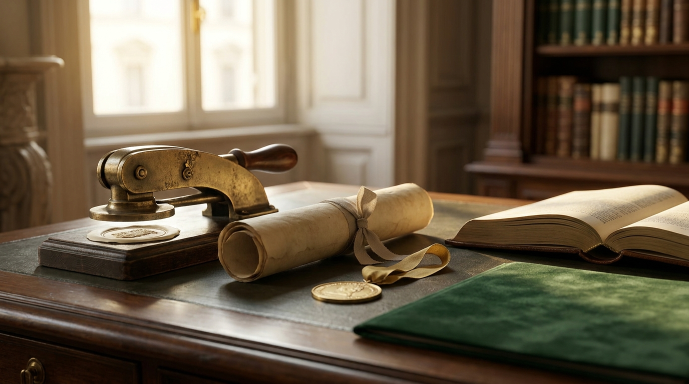

Vittime del dovere: l'INPS amplia l'esenzione IRPEF sulle pensioni
L'INPS rivede in senso più favorevole l'applicazione dell'esenzione fiscale sulle pensioni delle vittime del dovere, superando precedenti letture restrittive. Il punto incide direttamente sul netto percepito e apre alla possibilità di recuperare ritenute applicate in passato. Vediamo la base normativa, cosa cambia in concreto e a quali condizioni un trattamento può rientrare nell'esenzione.

Contesto: di cosa si parla
Le "vittime del dovere" sono soggetti che hanno subito lesioni o invalidità — o i loro superstiti — in conseguenza di attività di servizio o per fatti riconducibili all'esercizio di funzioni pubbliche. La normativa ha progressivamente esteso a questa categoria una serie di benefici già previsti per le vittime del terrorismo, tra cui agevolazioni di natura fiscale sui trattamenti pensionistici e sugli emolumenti collegati.
La questione applicativa riguarda l'ampiezza dell'esenzione: in passato l'amministrazione ha adottato interpretazioni più rigorose, limitando le voci di trattamento considerate esenti. L'orientamento più recente, recepito nelle istruzioni di gestione INPS, va nella direzione di un'applicazione più estesa del beneficio.
Una precisazione di metodo. L'ampliamento è annunciato come operativo a decorrere dal 2026. Allo stato, l'individuazione puntuale dell'atto INPS (tipo, numero e data del messaggio o della circolare) è elemento da verificare sulla fonte ufficiale: chi è interessato deve fare riferimento al provvedimento specifico, perché è quello a definire decorrenza e perimetro applicativo.
Inquadramento normativo: esenzione IRPEF e base legale
L'esenzione IRPEF significa, in concreto, che alcune somme non concorrono a formare il reddito imponibile: su di esse non si applica l'imposta sul reddito delle persone fisiche e, di conseguenza, il sostituto d'imposta non opera le relative ritenute. Il risultato è un importo netto più alto.
La cornice di riferimento per le vittime del dovere è la legge 23 dicembre 2005, n. 266 (legge finanziaria 2006), in particolare l'art. 1, commi 563-565, che individua la categoria e ne dispone l'equiparazione, ai fini dei benefici, alle vittime del terrorismo e della criminalità organizzata. Le condizioni di accesso sono state poi precisate dalla normativa attuativa, tra cui il D.P.R. 7 luglio 2006, n. 243.
L'esenzione fiscale discende dall'estensione alle vittime del dovere delle agevolazioni già riconosciute alle vittime del terrorismo dalla legge 3 agosto 2004, n. 206. È su questo nesso di equiparazione che si fonda l'applicazione del beneficio ai trattamenti pensionistici e accessori.
Per la natura della materia — esenzione IRPEF, ritenute, eventuali rimborsi tributari — il tema è prevalentemente fiscale e previdenziale; il collegamento con il rapporto di lavoro pubblico resta sullo sfondo, come origine del riconoscimento.
Implicazioni pratiche: l'analisi voce per voce
L'effetto dell'orientamento più favorevole non è automatico né uniforme su tutte le componenti del trattamento. Occorre distinguere voce per voce:
- la pensione diretta o di reversibilità collegata allo status di vittima del dovere;
- gli assegni accessori e gli emolumenti riconosciuti a titolo di beneficio;
- eventuali rivalutazioni e arretrati.
Non tutte le componenti seguono lo stesso regime: la qualificazione di ciascuna somma determina se e in che misura l'esenzione si applichi. È quindi un'analisi tecnica, non una valutazione "a forfait".
Il recupero del pregresso. Dove l'esenzione sia stata applicata in modo restrittivo, può porsi il tema del recupero delle ritenute IRPEF già operate. Lo strumento ordinario è l'istanza di rimborso all'Agenzia delle Entrate, soggetta al termine di 48 mesi previsto dall'art. 38 del D.P.R. 29 settembre 1973, n. 602, decorrente dal versamento o dalla ritenuta. Il termine ha natura decadenziale: scaduto, il diritto al rimborso non è più azionabile in via ordinaria.
Sul piano operativo, rileva il coordinamento con il sostituto d'imposta (l'ente che eroga la pensione) e la corretta rappresentazione delle somme nella Certificazione Unica (CU): è da questi documenti che si ricostruisce quanto effettivamente trattenuto.
Cosa fare in concreto
- Reperisci l'atto INPS di riferimento: individua il messaggio o la circolare che disciplina l'ampliamento e verificane decorrenza e ambito sulla fonte ufficiale.
- Recupera le Certificazioni Uniche degli ultimi anni e i cedolini pensione, per ricostruire le ritenute IRPEF applicate voce per voce.
- Verifica lo status di vittima del dovere e gli atti di riconoscimento ai sensi della L. 266/2005 e della normativa attuativa.
- Calcola i termini: ricorda il limite di 48 mesi ex art. 38 D.P.R. 602/1973 per l'eventuale istanza di rimborso delle ritenute pregresse.
- Coordina la posizione con il sostituto d'imposta, così da allineare il trattamento futuro al regime di esenzione corretto.
Chi rientra nella categoria può sottoporre la propria posizione a una verifica tecnica per valutare quali voci siano esenti e se sussistano margini di recupero entro i termini di legge.
Disclaimer
Contributo informativo a cura di Tamburro & Partners - Avv. Giuseppe Tamburro. Non costituisce parere legale.
Ogni storia di lavoro ha i suoi tempi.
Se gestisci HR e vuoi un confronto su contenzioso, ispezioni o licenziamenti, scrivi allo studio. Ti rispondiamo entro un giorno lavorativo.